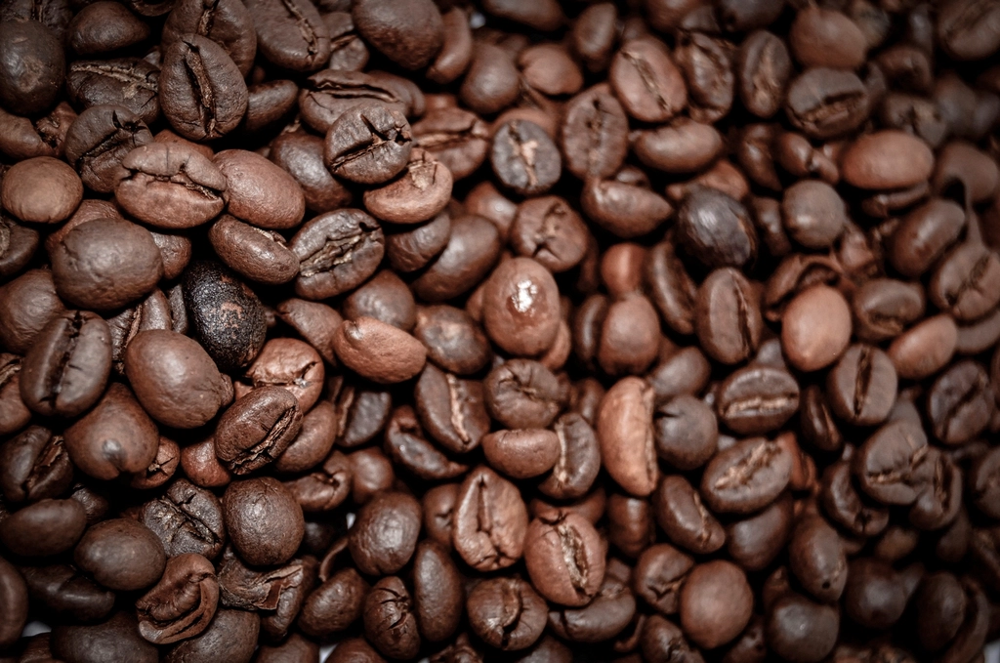
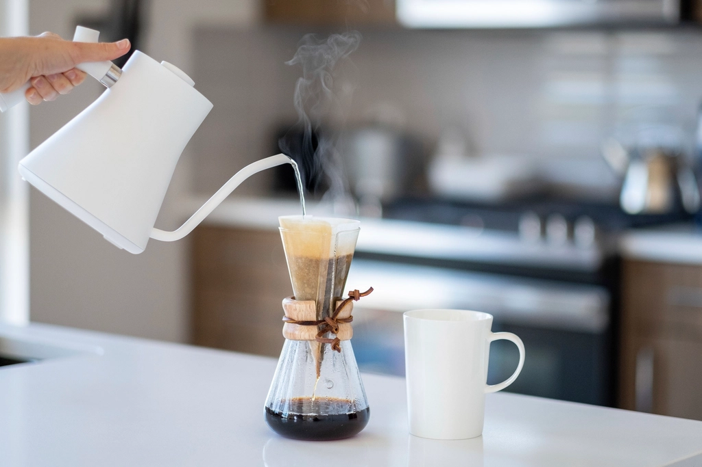
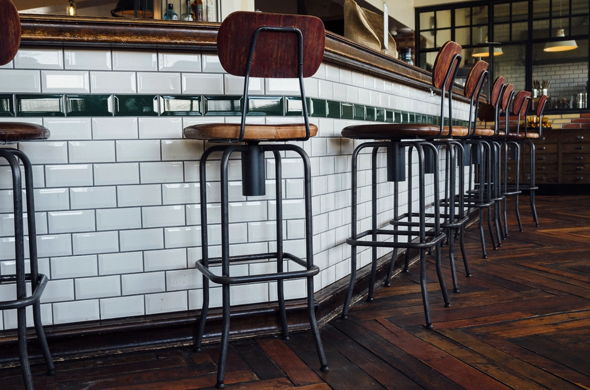
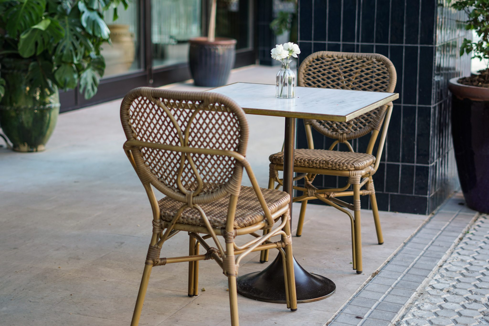
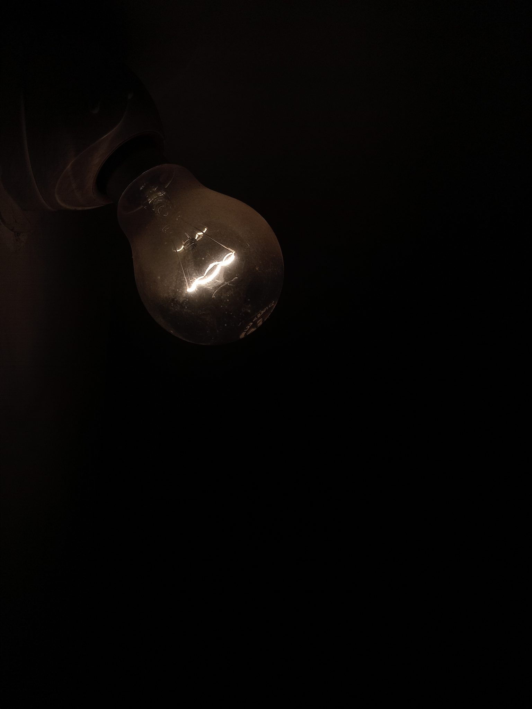

Gallery
ギャラリー
こちらに掲載する写真は、すべてイメージ(フリー素材)です。実店舗の写真ではありませんので、あらかじめご了承ください。実際の店内の雰囲気は、ぜひ一度ご来店いただいて確かめてみてください。

自家焙煎の香り
焙煎された豆のクローズアップイメージです。
イメージ画像(Openverse / CC0)

一杯ずつ、丁寧に
ハンドドリップの所作をイメージした写真です(手元・器具のみのカット)。
イメージ画像(Openverse / CC0)

カウンターの静かな時間
小さなカウンター席の落ち着いた雰囲気をイメージした写真です。
イメージ画像(Openverse / CC0)

外テーブルのカフェタイム
外のテーブルで過ごすひとときをイメージした写真です。
イメージ画像(Openverse / CC0)

広場に灯る、夕暮れの明かり
暖色の灯りのクローズアップなど、夕暮れの情景をイメージした写真です。
イメージ画像(Openverse / CC0)

コーヒーに寄り添う一品
パウンドケーキなどのフードをイメージした写真です。
イメージ画像(Openverse / CC0)